To open MaxFEM you can click on the program shortcut or execute the file INSTALLDIR/code/MaxFEM.py (where INSTALLDIR is the MaxFEM installation folder).
MaxFEM will load the last project you worked with. If there is no previous project, nothing will be loaded.
Notice that in MaxFEM a project is always attached to a folder which contains its main files.
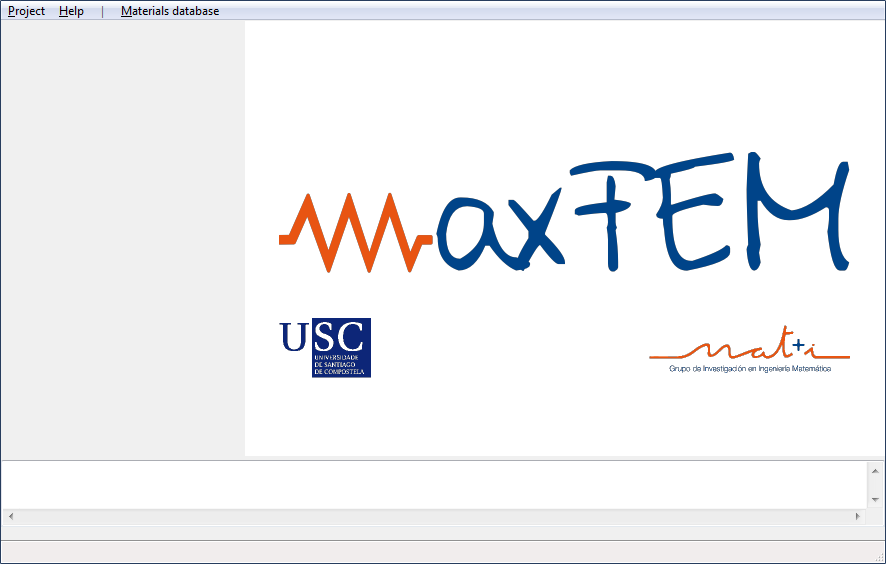
You can create a new project or load an existing one.
To create a new project, go to Project → Select folder... and select a new folder.
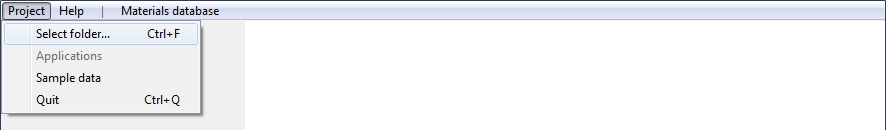
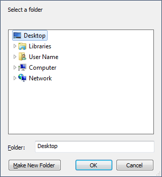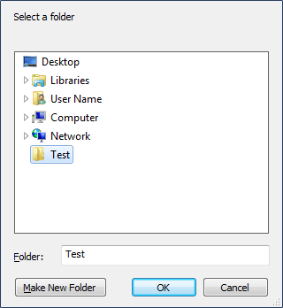
In this example, the folder Test was created on the desktop and its name appears in the title bar of the main window.
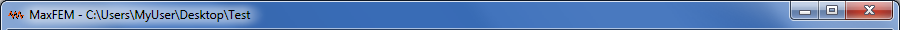
You can load an existing project going to Project → Select folder... and selecting its associated folder.
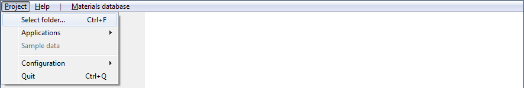
Then, you have to select an application. To do this, you must go to Project → Applications and select one of the available.
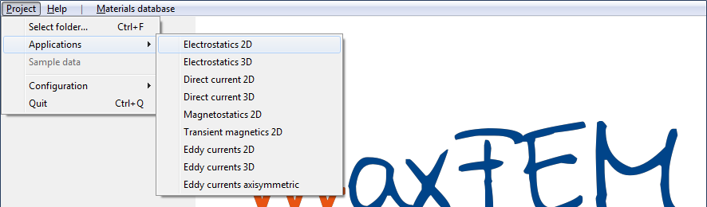
In this example, the application Electrostatics 2D was chosen and a warning message appears.
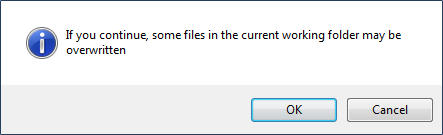
You must click OK to continue. Doing this, the application will be loaded and the entire menu appears.
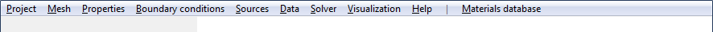
If needed, you can change the application associated with the current project. To do this, you can go again to Project → Applications and select another one. The menu associated with the new application will be shown.
For example, the menu associated with Electrostatics 2D (shown above) is different than the associated with Eddy currents axisymmetric (shown below).
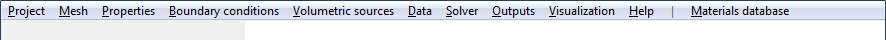
You can create a new sample data or load one of the sample data distributed with MaxFEM.
To create a new sample data, go to Project → Sample data (Electrostatics 2D) and select New.
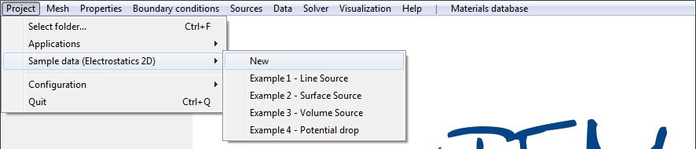
A warning message appears. You must click OK to continue.
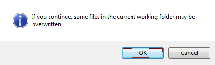
To choose a predefined sample data, go to Project → Sample data (Electrostatics 2D) and select one of the sample data available for the current application.
In this case, the Example 1 - Line Source was chosen.
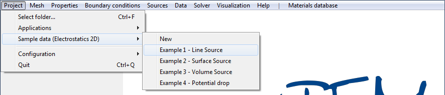
A warning message appears. You must click OK to continue.
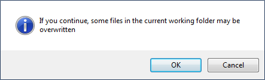
The bottom of the interface works as an information window where you can check what is happening.
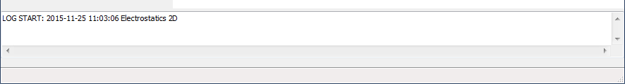